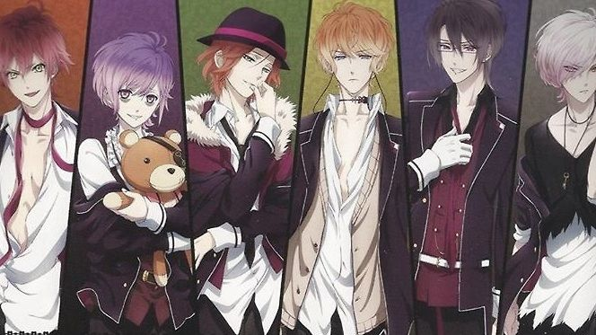

Diabolik Lovers
Trama principal
"Quando o pai de Yui Komori sai em viagem a trabalho, a garota se vê sozinha apenas com a orientação de
ir
à casa da família Sakamaki para ficar sob seus cuidados. Mas ao chegar à mansão, Yui descobre que os
seis irmãos Sakamaki são, na verdade, vampiros. Sádicos, os irmãos abusam psico e fisicamente, muitas
vezes se alimentando dela. Mas Yui encara e aceita a situação com otimismo, tentando desvendar os
mistérios do passado do clã Sakamaki - assim como de seu próprio passado..."
Subaru Sakamaki
Subaru Sakamaki (逆 巻 巻 ス バ ルSakamaki Subaru ) é o sexto e mais jovem filho da família Sakamaki. Subaru é o
único filho de Karlheinz, o Rei Vampiro, e sua terceira esposa, Christa.
Aparência

Subaru tem cabelos brancos com reflexos claros de lavanda, num tom de cor diferente do cabelo de seu irmão
Kanato, sendo ambos da família "roxa" de tons e cores. Ele também possui os olhos vermelhos escarlates com
uma ligeira tonalidade rosada.
Em Haunted Dark Bridal, ele geralmente é visto vestindo uma jaqueta preta com uma camisa vermelha por baixo
da qual tem um cinto marrom à sua volta. As extremidades da camisa vermelha parecem rasgadas / esfarrapadas.
Ele também usa jeans pretos e um colar que está embrulhado duas vezes em volta do pescoço com uma chave
dourada ou bronze colorida.
Em MORE, BLOOD, ele usa uma jaqueta preta com uma camisa preta embaixo. Ele também usa calças pretas e tem
uma camisola preta em volta da cintura. Ele também usa o mesmo colar com esta roupa.
Seu uniforme escolar consiste no blazer negro da escola com as mangas enroladas em seu cotovelo e uma camisa
preta por baixo daquela que é rasgada perto da borda e uma camisa branca embaixo dela que é mais longa e rasgada
no fundo. Há um pequeno loop de corrente no lado inferior esquerdo da jaqueta. Ele a usa com as calças uniformes
padrão. usa botas de salto branco, uma pulseira no braço esquerdo. Ele também usa o colar com isso.
Personalidade
Subaru pode ser descrito como do tipo solitário. Ele geralmente está sozinho e nunca se importa com o que
está acontecendo ao seu redor. Subaru é o tipo silencioso que geralmente dorme em um caixão. No entanto,
devido a sua infância muito traumática, ele é facilmente irritado e recorre à violência rapidamente,
chegando a quebrar tudo quando ele fica extremamente irritado.
Ele é um tipo de delinquente violento que adora quebrar as coisas. Ele também é um DO-S (extremo
sádico), mas apesar de tudo, ocasionalmente pode ser doce. Sua mãe, Christa, descreveu-o como gentil, apesar
de ser a principal razão para sua horrível infância e depois pela falta de confiança nas mulheres. Ele se
considera imundo e ignorante por causa da maneira como sua mãe mentalmente doente o denunciou sem cessar,
enquanto tentava matá-lo ou implorá-lo para matá-la.
A razão pela qual Subaru deu uma faca a Yui é porque ele queria que ela matasse ele e então ele disse que se
ela não pudesse fazê-lo, ela deveria se matar.
História
Mesmo que Christa soubesse muito bem onde estava entrando, e que seu "irmão mais velho" (seu parente de
sangue próximo, Karlheinz, que ela considera como um irmão direto, mesmo que ele realmente seja primo) já
tinha duas outras esposas, ela preferia a si mesma enganar e pensar que ele só os usa e só ama ela. Christa
que ama Karl como um irmão, não recusou o casamento, embora seu consentimento nunca tenha sido realmente
exigido. Mas quando ela descobriu que Karlheinz queria usá-la para criar um filho nascido entre eles apenas
para seus experimentos, ela começou a se esforçar entre odiar e amá-lo e se tornar mentalmente doente.
Naquela época, ela já estava grávida de Subaru, que só fazia sua condição mais complicada. Christa
tornou-se mentalmente doente e bipolar
Por isso, a mãe de Subaru, que já é extremamente instável, colocou Subaru na pior infância. Ela o chama de
uma abominação imunda e pede-lhe para matá-la e até mesmo tentar prejudicá-lo até o ponto de lhe dar uma
faca de prata que pode matar vampiros. Ele cresceu pensando que ele estava sujo e indesejável. No começo,
ele achou que era culpa de Karlheinz que ela fosse assim, mas quando Subaru tentou protegê-la, Christa deu
uma bofetada e entrou no abraço de Karl, que só chocou o pobre filho e deixou-o com enormes problemas de
confiança com as mulheres que ele mostra mais tarde para a heroína. Então ele começa a pensar que era tuda sua
culpa por sua mãe ser assim e que o único que detesta é ele. Com ninguém apoiando-o e dizendo-lhe que não é
culpa dele
Ele conheceu seus irmãos em um jantar que suas mães separadas os trouxeram. Sua primeira impressão de seus
irmãos era que ele não queria se envolver com eles.
Em um ponto, Subaru quebrou uma estátua de seu pai e foi jogado no oceano como castigo.
Curiosidades
1-Subaru não tem amigos na escola, o que significa que ele é um solitário.
2-Ele não tem comida favorita ou passatempos.
3-Ele é um tsundere
4-Ele é canhoto.
5-O tamanho do pé é 27cm.
6-Ele considera Shu seu irmão favorito.
7-Ele gosta do canto de Kanato.
8-Em DARK FATE, revela-se que ele é um filho de incesto.
